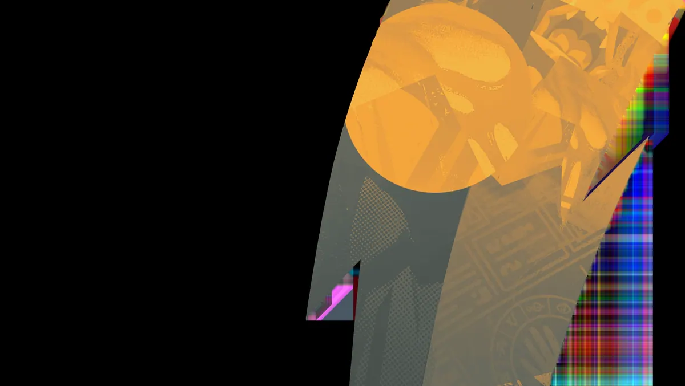
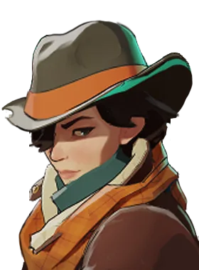

Adaga do Sono Sleep Dagger Lança uma adaga que fere e faz o alvo dormir; alvos dormindo acordam pouco depois de sofrer dano. Bomba de fumaça Smoke Bomb Some de vista, ficando invisível e ganhando velocidade de corrida; atacar quebra a invisibilidade e inimigos muito próximos ainda a veem.
Fixação Fixation Cada tiro acertado num alvo acumula um bônus de dano de bala contra ele, com bônus maior em tiros na cabeça. Dança das Balas Bullet Dance Entra numa rajada que atira em inimigos próximos com precisão perfeita e dano de bala adicional.Mobilidade e dano rápido para eliminar alvos frágeis.
História
A Comissão de Segurança e Investigação Oculta é uma organização governamental de caixa preta que faz a CIA parecer transparente. Cabe aos homens, mulheres e entidades da OSIC manter o país protegido de forças sinistras que estão além das capacidades da aplicação da lei local.
Como membro da notória Divisão Sandman, Haze é rotineiramente encarregado de se infiltrar nos sonhos de pessoas de interesse, para avaliar o seu nível de ameaça e, se necessário... colocá-los para dormir.
História oficial do jogo, traduzida automaticamente para o português.
Números reais
Habilidades
Lança uma adaga que fere e faz o alvo dormir; alvos dormindo acordam pouco depois de sofrer dano.
Some de vista, ficando invisível e ganhando velocidade de corrida; atacar quebra a invisibilidade e inimigos muito próximos ainda a veem.
Cada tiro acertado num alvo acumula um bônus de dano de bala contra ele, com bônus maior em tiros na cabeça.
Entra numa rajada que atira em inimigos próximos com precisão perfeita e dano de bala adicional.
Builds mais usadas
54.834 partidas registradas com esta build.
Revista Estendida (800) · Atacante Rápido (1.600) · Saúde Extra (800) · Recarga Ativa (1.600) · Revista Titânico (1.600) · Roubo de vida de bala (1.600) · Triturador resistente a balas (1.600) · Explosão de fogo (3.200) · Fortaleza (3.200) · Fúria Transe (3.200)
51.372 partidas registradas com esta build.
Espírito Extra (800) · Rodadas rápidas (800) · Recarga Ativa (1.600) · Atacante Rápido (1.600) · Andador do Véu (3.200) · Velocidade duradoura (1.600) · Pé Ligeiro (1.600) · Triturador resistente a balas (1.600) · Surto de Poder (3.200) · Explosão de fogo (3.200)
46.706 partidas registradas com esta build.
Rodadas rápidas (800) · Saúde Extra (800) · Espírito Extra (800) · Atacante Rápido (1.600) · Recarga Ativa (1.600) · Surto de Poder (3.200) · Regeneração Extra (800) · Refutação (800) · Rodadas de alta velocidade (800) · Reforço de tiro na cabeça (800)
Confrontos reais
 Shiv — 60.2% de vitória
Shiv — 60.2% de vitória Mirage — 58.8% de vitória
Mirage — 58.8% de vitória Viscous — 58.3% de vitória
Viscous — 58.3% de vitória Pocket — 58.3% de vitória
Pocket — 58.3% de vitória Sinclair — 58.2% de vitória
Sinclair — 58.2% de vitória Warden — 57.9% de vitória
Warden — 57.9% de vitória
 Graves — 47.1% de vitória
Graves — 47.1% de vitória Rat King — 47.5% de vitória
Rat King — 47.5% de vitória Paige — 47.8% de vitória
Paige — 47.8% de vitória Victor — 49.4% de vitória
Victor — 49.4% de vitória Seven — 49.8% de vitória
Seven — 49.8% de vitória Kelvin — 50.8% de vitória
Kelvin — 50.8% de vitória
Ver a página de counters do Haze
O que upar primeiro
Nível por nível, na ordem que os jogadores mais usam em partidas de verdade. A porcentagem mostra quantos escolheram aquela habilidade naquele nível.
Melhores duplas
Heróis que mais ganham jogando junto com ele, em partidas reais (pelo menos 1.500 partidas juntos).
- Paige60,8%
- Rat King60,3%
- Graves60,3%
- Seven60,1%
- Victor59,5%
- Mirage48,2%
- Shiv48,6%
- Pocket48,8%
Rota (lane)
Na rota, cada lado joga em dupla. Estes números são de confrontos reais: a diferença de almas é medida com o jogo já começado, então almas no verde significa que ele costuma estar na frente.
- Rat King — 47,3% de vitória +152 almas (46.242 partidas)
- Graves — 47,6% de vitória +650 almas (23.203 partidas)
- Paige — 49,4% de vitória +559 almas (10.287 partidas)
- Seven — 50,4% de vitória +587 almas (15.484 partidas)
 Violet — 51,3% de vitória +264 almas (4.882 partidas)
Violet — 51,3% de vitória +264 almas (4.882 partidas) Lash — 52,5% de vitória +296 almas (19.679 partidas)
Lash — 52,5% de vitória +296 almas (19.679 partidas)- Victor — 52,8% de vitória +261 almas (11.820 partidas)

Holliday — 53,6% de vitória +183 almas (2.588 partidas)
- Viscous — 63,2% de vitória +981 almas (234 partidas)
- Shiv — 61,4% de vitória +670 almas (2.726 partidas)
 Silver — 60,5% de vitória +313 almas (5.919 partidas)
Silver — 60,5% de vitória +313 almas (5.919 partidas)
Histórico de win rate
21/09: 52.9% → 09/11: 52.9% → 28/12: 54.2% → 15/02: 54.8% → 05/04: 56.8% → 24/05: 52.0% → 12/07: 53.9% → 30/08: 50.6% → 18/10: 52.8%